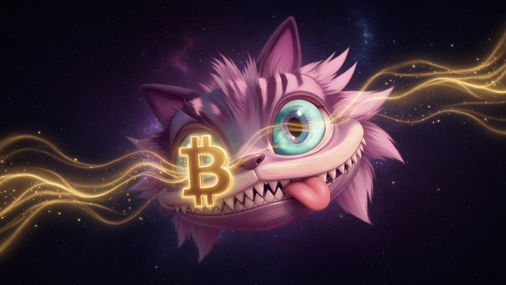

Bitcoin holders,
you were early once.
Now it’s happening again.
CATS is a Cardano-based meme coin building an Access Economy for Bitcoin holders, creators, NFTs, AI-powered content, and future BTCfi culture.
CATS is positioning itself for the Bitcoin DeFi era on Cardano. As BTCfi grows, CATS aims to become a cultural, meme-driven, and access-based gateway for users entering the Cardano ecosystem.
₿ → ADA → CATS → Access
CATS connects the story of Bitcoin value with Cardano’s flexible ecosystem. The mission is simple: make BTCfi easier, cuter, and more accessible.
Future campaigns may reward Bitcoin holders who explore Cardano, participate in CATS Access, or join BTCfi-related community events.
CATS is not only a meme. It is designed as an access key for content, NFTs, community experiences, and future digital utilities.

Hold CATS. Unlock content. Join the next phase of Cardano culture.
CATS holders can access exclusive pages, AI-generated stories, digital art, NFT benefits, and future creator tools.
CATS plans to welcome Bitcoin holders through proof-based campaigns, community quests, and early access rewards.
Future CATS NFTs may work as premium keys inside the CATS Universe, giving holders special access to stories, art, and community events.
88,888,888,888,888,900 CATS
45% Liquidity Pool
25% Community Rewards
15% Ecosystem Treasury
10% CATS Access / NFT
3% Marketing & Partnerships
2% Core Operations
No burn. No empty promises. CATS focuses on usage, access, community growth, liquidity, and long-term ecosystem participation.
Token registry, website, liquidity, social channels, community growth, and basic CATS Access page.
Wallet connection, CATS holder verification, locked content, NFT-based access, and creator experiments.
Bitcoin holder onboarding campaigns, BTCfi-themed NFTs, bridge-related community events, and future DeFi integrations.
AI stories, comics, animations, marketplace ideas, token-gated experiences, and long-term creator economy expansion.
CATS is an experimental community-driven meme and access project on Cardano. Nothing on this website is financial advice. Cryptocurrency is high risk. Always do your own research.